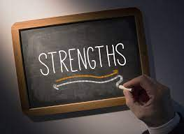
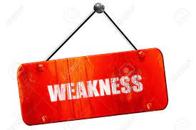
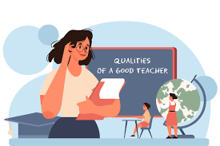

A food technology educator typically studies nutrition, nutrition and dietetics, food science, or food technology.
TAS teachers enjoy both the innovative and practical hurdles of teaching reducing subjects like engineering, food technology, information and software technology, software design and development, and textiles and design. As many TAS subjects change on a regular basis, great TAS teachers are always searching for ways to expand their fund of resource management that will intensely interact and enhance learning for students.
As a TAS teacher good communication skills with students at the start of the school year about how technology mandatory subjects can be useful in their daily lives as well as their future careers which can make them feel more at ease with you as a teacher. This can improve the students' ability to approach you whenever they need help, as well as their performance in the subjects, which can make them enjoy learning more. Educators should have the ability to listen to students' issues, anxieties, and continue to struggle. This is critical for building confidence in the students. Listening also assists teachers in better understanding their students' academic goals so that lessons can be customised to the students.
There are numerous methods for engaging with students. Educators should use humour, creativity, and a strong personality in their lessons and presentations. Public speaking abilities can significantly improve your ability to engage with others. Participation will change based on the instructional level and age of the students. Educators think outside the box and therefore aren't afraid to make their students raise their eyebrows or break into laughter.
Having that kind of a relationship within your class can base the class not only about educational purposes but also can be open and enjoy their learning.
Educators can never fully comprehend a student's home life. Perhaps all they need is someone to talk to who understands that they might not be perfect, particularly when they are struggling. Pay close attention to your student's needs. Take into account being more considerate and being awaren if their circumstance is particularly devastating. Identifying that something is simple for one student may be difficult for another is an important aspect of teaching. Take account of all your students and assist those who are struggling. Teachers take student participation to a higher level by integrating real world elements. This applies both to the students and the teachers. Real world experiences can assist students learn new information faster. There is also a higher probability that they will remember what they learned. Real-world experience demonstrates the practical value of learning.
The educators are eager to share their knowledge with others. They enjoy sharing their achievement secret information , knowledge, and significant insights. Experimenting with various teaching methods and communication styles is a component of education. After you've determined which strategies are most effective for you, share them with other teachers so that students can benefit. Transparent and accountable and commemoration are both required for success in this field.
Some ideas are simple to grasp. Others, on the other hand, are simply incomprehensible. Many people are struggling with abstract concepts, but some students may not understand concepts that you consider simple. Teachers should be capable of explaining anything, no matter how difficult they believe it is. They should be able to explain difficult concepts in simple language that students can understand.

Every educator has a teaching weakness. Some may be disorganised, while others may have difficulty connecting with their students. Despite, all of these flaws must be discussed as promptly as possible so that they do not have a significant impact on your career and future generations.
Once you've identified your weak points, make sure you're in the right frame of mind for personal growth. Make certain that you have a good mindset towards teaching and that you are truly energised by your work. Your first priority should always be to assist your students.
What are Qualities and Strengths of a Good Teacher
 Teachers must possess a distinct skill set in order to keep positive, sustained relationships with their students, family members, and workmates. One of the keys to teaching assistant strength is the ability to communicate effectively and efficiently.
Teachers are constantly communicating with parents and students, so being capable of engaging others and effectively communicating their viewpoints is critical. Another important characteristic that educators must retain is compassion and understanding.
Compassion also leads to a more customised teaching strategy. Patience, adaptability, and organisation all aid a teacher's career success. Patience can help to improve teacher-student connections.
Instead of becoming disappointed, it encourages teachers to take a step back, pay any attention to the student, and collaborate to develop a plan. The ability to adapt is essential for contemporary teachers. Every year, new technologies are introduced and the curriculum is revised.
Furthermore, students' requirements and the teaching environment could start changing, necessitating adaptation on the part of the teacher. The organisation reduces stress and exhaustion among teachers. A good teacher is organised and concentrated on the students rather than the paperwork.
Back to Home